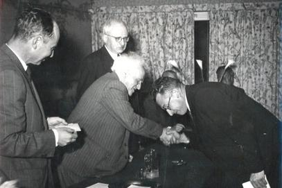
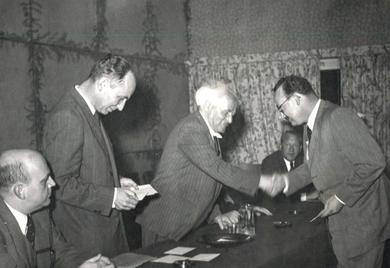
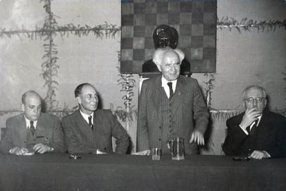
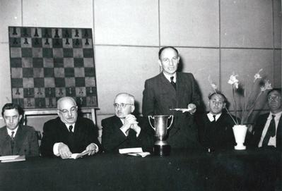
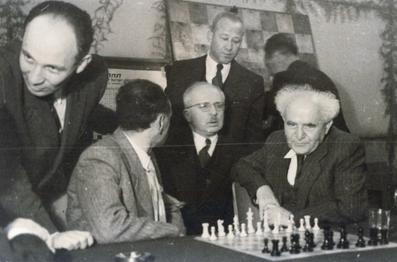
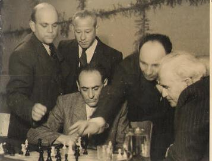
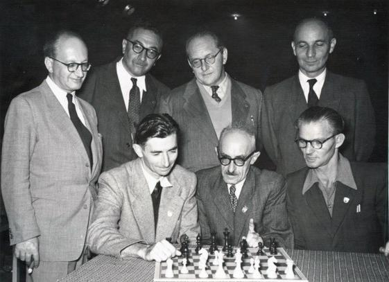
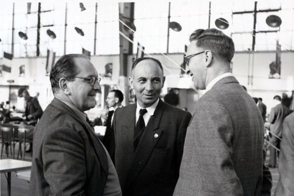

Organizer and Activist
Barav was not just a player. He was also an activist and a chess organizer, for example of the 1951 – first – Israeli championship. The 1951 championship took place in the “Women Pioneers' Hall” in Tel Aviv. Below is a collection of photos of Barav with the players and others in the tournament. Barav was the principal organizer of the tournament, the first after independence. It was mostly due to his effort the tournament succeeded.






The 1954 Amsterdam Olympiad
In the case of the 1954 Olympiad, too, Barav accompanied the team, helping with its organization, and so on. Here are two good photos taken at the Olympiad (or right before it):


Spreading Chess in the Country
Barav also “did his bit” as a patriot spreading chess in the country, especially during the days of the War of Independence and in other places. For example, Shaul Hon's Davar chess column in 1948 points out that Barav gave a simul to soldiers ‘in a base somewhere in Tel Aviv’ which is the first simultaneous display ever given (our research so far shows) to IDF soldiers, Aug. 1948 (+16 −1) and in Dec. 1948 in the Lasker chess club (+18 −1 =3; reported in Davar, Dec. 31st, 1948, p. 17); Davar added that the entire séance took only a little over two hours!
He also, for example, played simuls in Afikim (a kibbutz in Israel) in 1948 and 1951 (“Barav has a nice achievement in Afikim”, Davar 30/4/1951). He began to give simuls before, at least in 1945 (Davar reports on a simul given at the Lasker CC on June 15th, 1945).
Finally, it would surprise nobody to know that Barav was one of the founders of the Palestine Chess Association in the 1930s (the precursor of the Israeli Chess Federation), as Mohilever reminds the readers in Barav's obituary in Shahmat.
P.S. Many of the photos on this page are well known in Israeli chess literature, but usually in a much lower quality, as newspaper reproductions. E.g., the group photo of the 1954 team was quite commonly used in newspaper reports and (later) books or magazine reports on the 1954 Olympiad, e.g., in Porat's report from the Olympiad (Davar, 6/10/1954, p. 21) or in Czerniak's 64 Mishbatzot report (Jan.–Feb. 1957, p. 184). We thank Barav's son for bringing the originals to our attention!